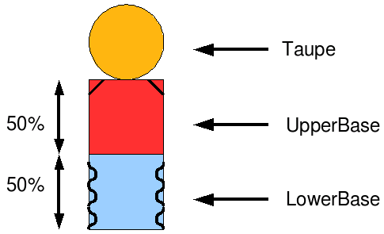
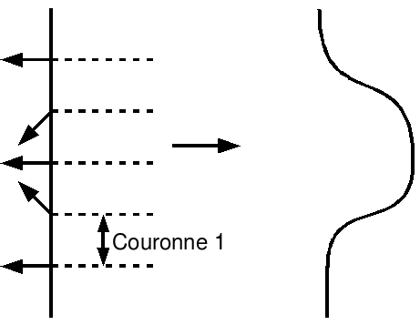
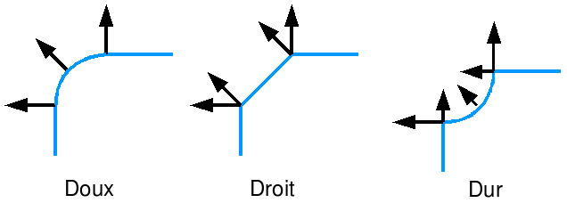

IN6 - TP sur les primitives surfaciques
Prémilinaire
- Compiler et exécuter Exo.java.
- - La quille se compose d'une base décomposée en
deux parties cylindriques d'égales hauteurs et
diamètres : LowerBase et UpperBase,
et d'un sommet composé d'une sphère :
Top.
- L'objectif est d'ornementer la quille avec des motifs basés
sur un effet visuel d'embossage, dans lequel on crée de
faux reliefs en "trichant" sur les normales.
- 
Partie 1 : Embossage
- - Créer trois crevasses disposées
régulièrement sur la partie basse.
Attention, il ne faudra pas créer de relief sur le
cylindre mais juste une illusion de relief. A cet effet, on se
contentera d'agir sur les normales selon le dessin suivant :
- 
- - On a des normales différentes entre la partie haute et
la partie basse de chaque couronne.
- - Attention à bien conserver l'organisation de la
géométrie indexée.
- - L'attribut sw contraint la largeur d'une crevasse
(composée des 4 couronnes).
- - L'attribut ns contraint le nombre de crevasses :
- -> trois crevasses
- -> deux crevasses : supprimer la crevasse centrale
- -> une crevasse : ne conserver que la crevasse centrale
- - On pourra modifier interactivement les valeurs de ces attributs
par les touches 's' pour le nombre de crevasses et 'w' pour leur
largeur.
Partie 2 : Biseautage
- Reprendre le modèle de la quille pour bisouter
l'arête supérieure de la partie haute de la base.
- - Trois types de biseaux pourront être choisis en plus de
la version sans biseau (SANS) :
DOUX, DROIT et DUR.
- 
- - L'attribut cs contraint la largeur du biseau.
- - L'attribut ct contraint le type de biseau (0 = doux,
1 = droit, 2 = dur).
- - On pourra modifier interactivement les valeurs de ces attributs
par les touches 't' pour le type de biseau et 'h' pour leur
largeur (ou hauteur).